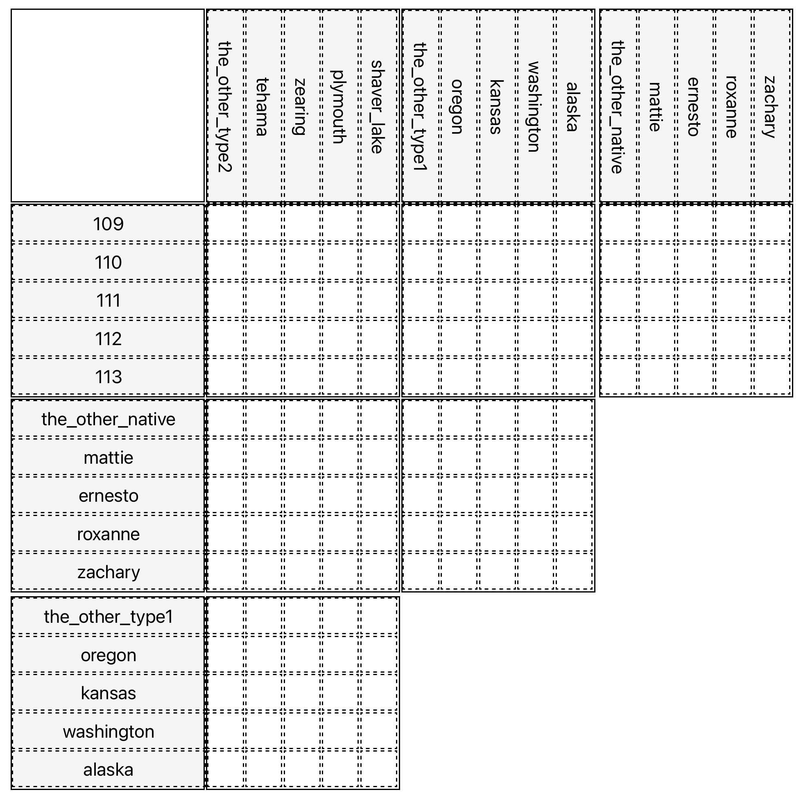

L5SORECOSemestre 5 · 2026/2027
Gianni Gastaldi
Cours 3
Logique propositionnelle: Sémantique
28/09/2026
\[ \newcommand{\F}{\textsf{F}} \newcommand{\V}{\textsf{V}} \newcommand{\valeurs}{\{\F,\V\}} \newcommand{\alert}[1]{\color{\red}{#1}} \newcommand{\cyellow}[1]{\color{rgb(242,183,5)}{#1}} \newcommand{\cred}[1]{\color{rgb(213,43,30)}{#1}} \newcommand{\cblue}[1]{\color{rgb(31,78,158)}{#1}} \newcommand{\cgreen}[1]{\color{rgb(26,127,55)}{#1}} \newcommand{\muted}[1]{\color{rgb(196,196,196)}{#1}} \]
Ensemble
Un ensemble est une collection d’objets, appelés ses éléments. Il est entièrement déterminé par ses éléments: ni ordre, ni répétition. \[A = \{a, b, c\} \qquad A = \{x \mid P(x)\}\] Définition en extension: on énumère les éléments.
Définition en compréhension: on donne une propriété \(P\) qui les caractérise.
Appartenance
\(x\) appartient à \(A\) si \(x\) est un élément de \(A\). \[x \in A \qquad y \notin A\] C’est la relation primitive: toutes les autres notions se définissent à partir d’elle.
Inclusion
\(B\) est inclus dans \(A\) (ou \(B\) est une partie de \(A\)) si tout élément de \(B\) est un élément de \(A\). \[B \subseteq A \qquad \text{mais} \qquad B \notin A\] \(B\) est une partie de \(A\), pas un de ses éléments. L’ensemble vide \(\varnothing\), qui n’a aucun élément, est une partie de tout ensemble.
Deux relations différentes
L’appartenance \(\in\) relie un élément à un ensemble. L’inclusion \(\subseteq\) relie un ensemble à un ensemble. \[a \in A \qquad B \subseteq A\] Sur le dessin: les éléments sont des points, les parties sont des régions.
Une partie n’est pas un élément
Les éléments de \(A = \{a, b, c\}\) sont \(a\), \(b\) et \(c\) — et rien d’autre. \(B = \{a, b\}\) n’est pas l’un d’eux. \[B \subseteq A \qquad \text{mais} \qquad B \notin A\] Un ensemble peut pourtant avoir des ensembles pour éléments: si \(A' = \{a, b, \{a, b\}\}\), alors \(B \in A'\) et \(B \subseteq A'\).
Un élément n’est pas son singleton
Le singleton \(\{a\}\) est l’ensemble dont \(a\) est l’unique élément. C’est un ensemble: il est inclus dans \(A\), il n’y appartient pas. \[a \in A \qquad \{a\} \subseteq A \qquad \{a\} \notin A\] En général: \(x \in A \iff \{x\} \subseteq A\).
Réunion
La réunion de \(A\) et \(B\) est l’ensemble des éléments qui appartiennent à \(A\) ou à \(B\) (ou aux deux). \[A \cup B = \{x \mid x \in A \text{ ou } x \in B\}\]
Intersection
L’intersection de \(A\) et \(B\) est l’ensemble des éléments qui appartiennent à \(A\) et à \(B\). \[A \cap B = \{x \mid x \in A \text{ et } x \in B\}\] Si \(A \cap B = \varnothing\), on dit que \(A\) et \(B\) sont disjoints.
Complémentaire
Le complémentaire de \(A\) dans un ensemble \(E\) qui le contient est l’ensemble des éléments de \(E\) qui n’appartiennent pas à \(A\). \[\complement_E A = \{x \in E \mid x \notin A\}\] Ou, et, non: on retrouve les connecteurs — c’est l’algèbre de Boole.
Couple
Un couple \((x, y)\) est une paire d’éléments ordonnée: \(x\) est sa première composante, \(y\) sa seconde. \[(x, y) \neq (y, x) \quad \text{si } x \neq y\]
Produit cartésien
Le produit cartésien de \(A\) et \(B\) est l’ensemble de tous les couples dont la première composante est dans \(A\) et la seconde dans \(B\). \[A \times B = \{(x, y) \mid x \in A,\ y \in B\}\] Si \(A\) a \(n\) éléments et \(B\) en a \(m\), \(A \times B\) en a \(n \cdot m\).
Relation
Une relation de \(A\) vers \(B\) est une partie du produit cartésien \(A \times B\). \[R \subseteq A \times B \qquad x \mathrel{R} y \iff (x, y) \in R\]
Application (ou fonction)
[Une application ou fonction est une relation particulière, où de chaque élément du départ part une et une seule flèche.]
Il s’agit d’une correspondance qui à chaque élément \(x\) d’un ensemble \(A\) (appelé ensemble de départ ou domaine) associe un et un seul élément \(y\) d’un ensemble \(B\) (dit ensemble d’arrivée ou codomaine).
On note \[f: A \to B\] l’application qui à \(x \in A\) associe \(y = f(x) \in B\).
Attention à ne pas confondre cette flêche avec le connecteur logique \(\to\) (si… alors). Le contexte d’usage devrait suffire à lever toute ambiguïté.
Image
L’image d’une application \(f\), c’est la partie de l’arrivée de \(f\) constituée par les images des éléments du départ de \(f\). \[\mathrm{Im}(f) = fA\] À l’arrivée: une sélection.
Quotient
Le quotient d’une application \(f\), c’est l’ensemble des classes définies par \(f\) dans l’ensemble de départ de \(f\). \[\mathrm{Quot}(f) = A/f\] Au départ: une classification — même classe, même image.
Injection (application injective)
Une injection est une application telle que tout élément de l’arrivée soit image d’au plus un élément du départ.
Surjection (application surjective)
Une surjection est une application telle que tout élément de l’arrivée soit image d’au moins un élément du départ.
Bijection (injective et surjective)
Une bijection est une application telle que chaque élément de l’arrivée soit image d’un et un seul élément du départ.
a,b,…,z,A,B,…,Z,0,1,2,…,9,',⎵}a,aaaaaaa,abababab,sdfk6788asd,solounacosanohay,…}base → règles de construction → clôture
La définition de \(\Sigma^*\) de toutes les expressions possibles est un exemple de ce schéma inductif.
On peut le résumer ainsi:
Atomes
Les atomes ou propositions atomiques sont des symboles définissant un ensemble non vide appelé signature propositionnelle \(\sigma\).
Ex: \(\{p,q,r\}\)
Connecteurs
\(\{\bot, \top, \neg, \wedge, \vee, \rightarrow, \leftrightarrow\}\)
Notations concurrentes: \(\&\) pour \(\wedge\), \(\supset\) pour \(\rightarrow\), \(\equiv\) pour \(\leftrightarrow\).
On rencontre aussi \(\sim\), \(!\) \(-\) pour \(\neg\) et \(|\) pour \(\vee\).
Parentheses
\(\{(,)\}\)
p,q,r} ∪ {⊥,⊤,¬,∧,∨,→,↔︎} ∪ {(,)}p,)p(∨,¬¬¬q,p∧∨q,…}Formules
Les formules sont les éléments du language \(L\) de la logique propositionnelle.
Les règles des parenthésage n’appartiennent pas à la syntaxe du language
mais au métalangage
Si on veut être très formel, on peut voir les connecteurs comme des
fonctions du langage \(L\) vers lui-même.
\[ \begin{align} \bot, \top&: L^0 \to L&\quad\text{(arité 0)}\\ \neg&: L^1 \to L&\quad\text{(arité 1)}\\ \wedge, \vee, \rightarrow, \leftrightarrow&: L^2 \to L&\quad\text{(arité 2)} \end{align} \]
\[\big((p \vee \neg q) \rightarrow (r \wedge p)\big)\]
Exemple:
Paul, Quentin et Robert partagent un bureau.
\[\sigma = \{p,\; q,\; r\}\]
Ce que cette signature ne peut pas dire
Ce que cette signature peut bien dire
Modèles
Preuves
Définition par récursion
sur la structure inductive
(Lifschitz et al. 2008, sec. 1.2.1)
Pour toute formule \(F\) et toute interprétation \(I\), la valeur \(F^{I}\) est définie par:
Attention aux symboles
\[ \begin{align} (\cred{\neg} F)^{I} &= \cblue{\neg}(F^{I})\\ (F \cred{\odot} G)^{I} &= \cblue{\odot}(F^{I}, G^{I}) \end{align} \]
Même symbole, deux fonctions différentes.
Définition par récursion sur la structure
Pour toute formule \(F\) et toute interprétation \(I\), la valeur \(F^{I}\) est définie par:
Définition
Une interprétation de \(\sigma\) (aussi appelée modèle ou assignation) est une fonction \[I : \sigma \longrightarrow \valeurs\]
To represent knowledge by propositional formulas, we choose a propositional signature \(\sigma\) such that interpretations of \(\sigma\) correspond to states of the system that we want to describe.
\(\sigma = \{p,q,r\}\)
8 états du bureau possibles
| \(p\) | \(q\) | \(r\) | |
|---|---|---|---|
| \(I_1\) | \(\V\) | \(\V\) | \(\V\) |
| \(I_2\) | \(\V\) | \(\V\) | \(\F\) |
| \(I_3\) | \(\V\) | \(\F\) | \(\V\) |
| \(I_4\) | \(\V\) | \(\F\) | \(\F\) |
| \(I_5\) | \(\F\) | \(\V\) | \(\V\) |
| \(I_6\) | \(\F\) | \(\V\) | \(\F\) |
| \(I_7\) | \(\F\) | \(\F\) | \(\V\) |
| \(I_8\) | \(\F\) | \(\F\) | \(\F\) |

Définition par récursion sur la structure
Pour toute formule \(F\) et toute interprétation \(I\), la valeur \(F^{I}\) est définie par:
\[ \alert{\bot}, \alert{\top}: \valeurs^0 \to \valeurs \]
Table de vérité
| \(F^I\) | \(\bot^I\) | \(\top^I\) |
|---|---|---|
| peu importe | \(\F\) | \(\V\) |
Définition par récursion sur la structure
Pour toute formule \(F\) et toute interprétation \(I\), la valeur \(F^{I}\) est définie par:
\[ \alert{\neg}(\cdot): \valeurs^1 \to \valeurs \]
Table de vérité
| \(F^I\) | \(\neg F^I\) |
|---|---|
| \(\F\) | \(\V\) |
| \(\V\) | \(\F\) |
Définition par récursion sur la structure
Pour toute formule \(F\) et toute interprétation \(I\), la valeur \(F^{I}\) est définie par:
\[ \alert{\odot}(\cdot,\cdot): \valeurs^2 \to \valeurs \]
Tables de vérité \(\wedge\), \(\vee\), \(\rightarrow\), \(\leftrightarrow\)
| \(F^I\) | \(G^I\) | \(\wedge(F^I,G^I)\) | \(\vee(F^I,G^I)\) | \(\rightarrow(F^I,G^I)\) | \(\leftrightarrow(F^I,G^I)\) |
|---|---|---|---|---|---|
| \(\F\) | \(\F\) | \(\F\) | \(\F\) | \(\V\) | \(\V\) |
| \(\F\) | \(\V\) | \(\F\) | \(\V\) | \(\V\) | \(\F\) |
| \(\V\) | \(\F\) | \(\F\) | \(\V\) | \(\F\) | \(\F\) |
| \(\V\) | \(\V\) | \(\V\) | \(\V\) | \(\V\) | \(\V\) |
| Formule | Lecture usuelle | Quand est-ce vrai? |
|---|---|---|
| \(\neg F\) | non \(F\) | quand \(F\) est faux |
| \(F \land G\) | \(F\) et \(G\) | quand les deux sont vrais |
| \(F \lor G\) | \(F\) ou \(G\) | quand au moins un est vrai |
| \(F \to G\) | si \(F\), alors \(G\) | sauf si \(F\) est vrai et \(G\) faux |
| \(F \leftrightarrow G\) | \(F\) si et seulement si \(G\) | quand ils ont la même valeur |
Une implication à antécédent faux est vraie.
«Si la Lune est en fromage, alors \(2+2=4\)» → VRAI
«Si la Lune est en fromage, alors \(2+2=5\)» → VRAI
Ce n’est pas une découverte sur le français
C’est une décision de définition, justifiée pour des raisons strictement formelles.
\(p \rightarrow q\) est équivalent à \(\neg p \vee q\) — l’implication reste donc vérifonctionnelle.
Le sens est calculé en suivant l’arbre syntaxique.
\((p \rightarrow q) \rightarrow (\neg q \rightarrow \neg p)\)
| \(p\) | \(q\) | \(p \rightarrow q\) | \(\neg q\) | \(\neg p\) | \(\neg q \rightarrow \neg p\) | le tout | |
|---|---|---|---|---|---|---|---|
| \(I_1\) | F | F | V | V | V | V | V |
| \(I_2\) | F | V | V | F | V | V | V |
| \(I_3\) | V | F | F | V | F | F | V |
| \(I_4\) | V | V | V | F | F | V | V |
\((p \rightarrow q) \rightarrow (\neg q \rightarrow \neg p)\)
| \(p\) | \(q\) | \((p\) | \(\rightarrow\) | \(q)\) | \(\rightarrow\) | \((\neg\) | \(q\) | \(\rightarrow\) | \(\neg\) | \(p)\) | |
|---|---|---|---|---|---|---|---|---|---|---|---|
| \(I_1\) | F | F | F | V | F | V | V | F | V | V | F |
| \(I_2\) | F | V | F | V | V | V | F | V | V | V | F |
| \(I_3\) | V | F | V | F | F | V | V | F | F | F | V |
| \(I_4\) | V | V | V | V | V | V | F | V | V | F | V |
| Statut | Critère | Exemple |
|---|---|---|
| Tautologie Formule valide Loi logique |
vraie dans toutes les interprétations | \(p \lor \neg p\) |
| Contradiction | vraie dans aucune interprétation | \(p \land \neg p\) |
| Contingente | vraie dans certaines, fausse dans d’autres | \(p \to q\) |
Soit \(I(p)=\V\), \(I(q)=\F\), \(I(r)=\V\).
\[F = \big(\neg p \lor q\big) \to r\]
La formule est vraie dans \(I\).
On note: \(I\models F\)
Satisfaction / modèle
si \(F^{I} = V\), on dit que \(I\) satisfait \(F\), ou que \(I\) est un modèle de \(F\). On note: \(I \models F\)
Satisfaisabilité
Un ensemble de formules \(\Gamma\) est satisfaisable s’il existe une interprétation satisfaisant toutes ses formules.
Conséquence
Si toute interprétation satisfaisant \(\Gamma\) satisfait \(F\), on dit que \(F\) est une conséquence logique de \(\Gamma\). On note: \(\Gamma \models F\).
Thus the relation symbol \(\models\) is understood either as «satisfies» or as «entails» depending on whether its first operand is an interpretation or a set of formulas.
(Lifschitz et al. 2008, sec. 1.2.1, note 2)
| écriture | premier argument | lecture |
|---|---|---|
| \(I\) \(\models F\) | une interprétation | \(I\) satisfait \(F\) |
| \(\Gamma\) \(\models F\) | un ensemble de formules | \(\Gamma\) a pour conséquence \(F\) |
Then any formula of \(\sigma\) represents a condition on states; a set of formulas can be viewed as a knowledge base; if a formula \(F\) is entailed by a knowledge base \(\Gamma\) then the condition expressed by \(F\) follows from the information included in \(\Gamma\).
\[\sigma = \{p,q,r\} \qquad \Gamma = \{p,\, q\}\] «Paul est là, Quentin est là.»
\(\Gamma = \{p, q\}\)
Les deux interprétations ou modèles qui satisfont \(\Gamma\) diffèrent sur \(r\).
Lifschitz, Morgenstern & Plaisted 2008, §1.2.1
The semantics of propositional logic does not incorporate the closed world assumption.
Une base de données répondrait «non» à «Robert est-il là?» (negation as failure).
La logique classique répond «je ne sais pas».
\[\neg p \vee \neg q \vee \neg r \qquad \text{«au moins une personne est absente»}\]
(formule (1.1) de Lifschitz et al. 2008)
| \(\Gamma = \{p,q\}\) | \(\Gamma' = \Gamma \cup \{\neg p \vee \neg q \vee \neg r\}\) | |
|---|---|---|
| modèles | \((V,V,F)\) et \((V,V,V)\) | \((V,V,F)\) seulement |
| nombre | 2 | 1 |
| \(\models \neg r\) ? | non | oui |
Une formule de plus → un modèle de moins → une conséquence de plus.
\(\{p\} \not\models q\)
\(\{p, p \rightarrow q\} \models q\)
| \(p\) | \(q\) | \(p \rightarrow q\) | \(\neg q\) | \(\neg p\) | \(\neg q \rightarrow \neg p\) | le tout | |
|---|---|---|---|---|---|---|---|
| \(I_1\) | F | F | V | V | V | V | V |
| \(I_2\) | F | V | V | F | V | V | V |
| \(I_3\) | V | F | F | V | F | F | V |
| \(I_4\) | V | V | V | F | F | V | V |
Le renversement à retenir
Plus on ajoute d’information à \(\Gamma\),
plus \(\mathrm{Mod}(\Gamma)\) rétrécit,
plus il y a de conséquences.
Deux cas limites
L’idée centrale pour calculer la conséquence logique
\[\Gamma \models F \quad\Longleftrightarrow\quad \Gamma \cup \{\neg F\} \ \text{est insatisfaisable}\]
Pour montrer que
\[\Gamma \not\models F\]
il suffit d’exhiber une interprétation telle que :
\[I\models\Gamma\quad\text{et}\quad I\not\models F\]
Un seul contre-modèle invalide une prétendue conséquence logique.
Gianni Gastaldi | L5SORECO